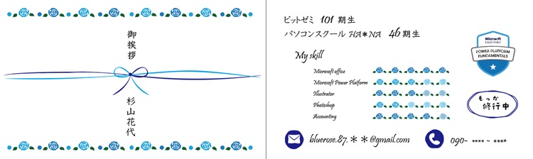
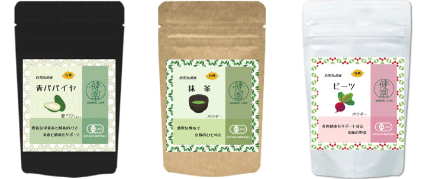
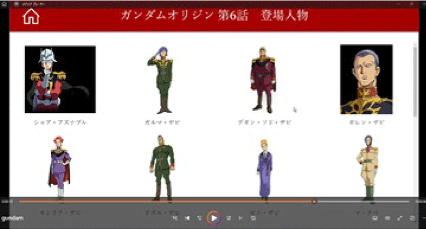
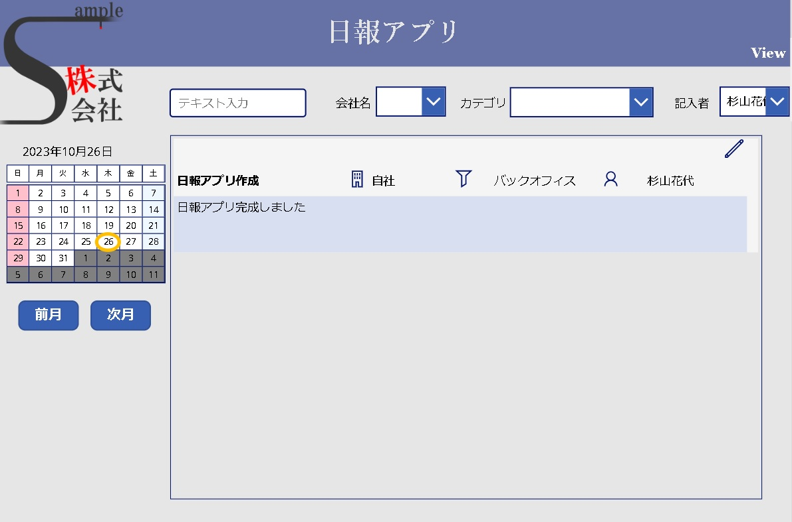

Bluerose
青い薔薇が教えてくれる 夢を叶えるための秘訣
自己紹介
杉山 花代 ~ Hanayo Sugiyama ~
私は「Bluerose」を自分自身のテーマとして掲げています。
青い薔薇の花言葉は、1990年代までは「不可能」とされていました。というのも、薔薇には青色素が存在しないため、青い薔薇を作ることは不可能だと考えられていたからです。しかし、1996年にサントリー社が青い薔薇を開発し、花言葉も「夢が叶う」「奇跡」と変更されました。
この逸話は、自身のキャリア形成にも当てはまると考え、自分が目指すものを信じ、努力を続けるよう心掛けています。
学歴
- 広島県立呉三津田高等学校 普通科 卒業
- 広島工業大学 環境学部 環境デザイン学科 卒業
職歴
経理事務を中心に、ISOの新規取得、基幹システム刷新プロジェクトなど多種多様な業務を経験してまいりました。
そのほか、小中学校でのパソコンの先生、木工所で家具職人の経験もあります。
職業訓練歴
- 株式会社アイシー
- ITサービス科 修了
- 株式会社Social Bridge
- 経理事務科 修了
- 株式会社ビットゼミ
- アプリ製作できる事務職【市民開発者】養成科 修了
- パソコンスクールHA＊NA
- Webデザイナー養成科 修了予定
趣味
トライ＆エラー
失敗を恐れずにとにかく挑戦する【トライ＆エラー】自体が趣味です。
失敗は学びの源泉です！
失敗を分析して、次のアクションを考え試す。
成功し喜びを噛みしめる時の感触がたまらなく好きです。
資格・検定
- 日本商工会議所 簿記検定試験 2級
- 大阪商工会議所 ビジネス会計検定試験 ３級
- Ｗｅｂクリエイター能力認定試験 エキスパート
- Power Platform Fundamentals(PL-900)
- Microsoft Office Specialist 365＆2019 Expert
Word,Excel,Access - Microsoft Office Specialist 365＆2019
PowerPoint - Excel VBA ベーシック
- 運行管理者（貨物）
スキル
Hover over the icon
-
HTML5&CSS3
Webサイトの土台となるHTML
デザイン・装飾の機能をもつCSS
下記「Works サイト作成」にて紹介しましたWebサイトが作成できます習得度

JavaScript
Webページに動きのある表現をつけるプログラミング言語
参考文献を調べながら、思い描いた動的な表現が可能です。習得度


Illustrator
下記「Works Webサイト」で使用したあしらいの作成や「Works デザイン」に紹介した名刺・商品パッケージ・バナー等が作成できます
習得度

Photoshop
画像加工等基本的な操作ができます
下記「Works サイト作成」にて紹介しました蕎麦処健康堂の蕎麦切り動画はPhotoshopで作成しました習得度

Word
スタイル作成・段落レイアウト・索引作成・図表一覧作成・差し込み印刷など高度な編集機能・書式設定機能の利用ができます
習得度

Excel
マクロやピボットテーブルの作成・数式のトラブルシューティング等が可能で、業務に必要なExcelファイルテンプレートを自在に作成できます
習得度

PowerPoint
習得度

PowerApps
習得度
作品
サイト作成
【架空サイト】蕎麦処健康堂（入校4ヶ月目 課題）

テーマ「健康」を食の面から考えて、蕎麦を食べることで健康になろう！と、蕎麦屋のサイトを作成しました。
本来はカンプのみの課題でしたが、コーディングにも挑戦しました
写真2枚を加工し、GIFアニメを作成したところがポイントです。
【使用したツール】
HTML5、css3、JavaScript、VSコード、Photoshop、Illustrator、Figma
【架空サイト】flowershop健康堂（入校4ヶ月目 課題）
テーマ「健康」を視覚の面から考えて、花を愛でることで健康になろう！と花屋のサイトを作成しました。
本来はカンプのみの課題でしたが、コーディングにも挑戦しました。
提出は１点で良いところ、色々な機能を実装したかったので、クラスで唯一２点提出し、努力賞を頂戴しました。
マインドナンバー占いを作成したところがポイントです。
【使用したツール】
HTML5、css3、JavaScript、VSコード、Photoshop、Illustrator、Figma
【卒業制作】梶村商店様ホームページ（入校5ヶ月目 課題）
卒業制作として、チームで実在のお店のホームページを作成しました。
他のチームより１名人数が少なかったため、サブコーダーとサブディレクターを兼務しました。
【使用したツール】
HTML5、css3、VSコード、Photoshop、Figma
フリー素材サイトリンク集（入校2ヶ月目 自主制作）
HTML、cssの授業でgridを学習した際、復習も兼ねて、活用できるサイトを自主作成しました。
リスト化することでサイト検索の時短にもなり一石二鳥以上の効果がありました。
【使用したツール】
HTML5、css3、VSコード、Illustrator
デザイン
名刺
お題「Illustratorで名刺を作ろう（入校1ヶ月目 課題）」
Illustratorの授業で作成しました。
初夏に作成したので、お中元の熨斗をイメージして作成しました。
アイデア賞を頂戴しました。
【使用したツール】
Illustrator
パッケージデザイン（入校3ヶ月目 自主制作）

デザインコンペ初応募した作品です。（パッケージデザイン自体初体験でした）
シリーズものなので統一感を持たせながら原材料ごとの違いを表現するのに苦労しました。
苦手としていたIllustratorとPhotoshopの操作の習得に大いに役立ちました。
【使用したツール】
Illustrator、Photoshop
アプリ製作
ガンダムオリジン第6話 登場人物リストアプリ
業務日報アプリ
